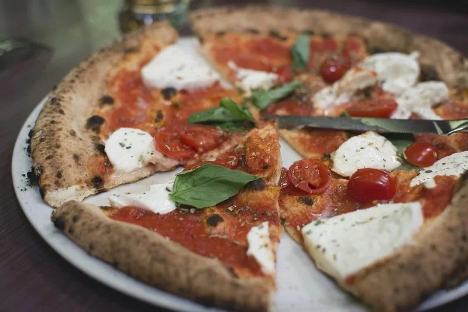

Margherita Pizza
Home

Description:
A margherita pizza is a classic Italian pizza known for its simple yet high-quality
ingredients that represent the colors of the Italian flag. Originating in Naples,
it features a thin, hand-kneaded crust, often baked in a wood-fired oven.
The toppings consist of vibrant red San Marzano tomato sauce,
fresh white mozzarella cheese, and aromatic green basil leaves.
A final drizzle of extra-virgin olive oil brings all the fresh,
tangy, and creamy flavors together in a harmonious and authentic Italian delight.
Ingredients:
- 1 Recipe Pizza Dough
- 1/2 cup Pizza Sauce
- 2 cups Fresh Sliced Mozzarella
- 1/4 cup Parmesan Cheese
- Fresh Basil Leaves
Steps:
- Preheat oven to 475F. Prepare all ingredients for the margherita pizza.
- On a floured surface, roll the dough into the desired shape. Top it off with pizza sauce, pieces of fresh mozzarella and sprinkle a bit of parmesan cheese.
- Bake pizza for about 14 minutes or until the crust is lightly browned and the cheese is golden.
- Remove pizza from the oven, top it off with fresh basil. Serve pizza right away, while the cheese is all melted.